Performance / Composition Synthesizer · Version 3.0
Section 10 — Understanding the Sequencer
This section contains an introduction to the TS‑10 sequencer and all the information you’ll need to get started sequencing. More detailed descriptions of the actual parameters are covered in the following section. Section 12 — Sequencing/MIDI Applications explains some typical uses of the TS‑10 sequencer.
Introduction
The TS‑10, with its 24-track sequencer, incorporates a range of features and capabilities you would expect to find in stand-alone or computer sequencers, yet with the advantage of an integrated system. The TS‑10 is both powerful and easy to use — having your synthesizer, sequencer and master keyboard controller right at your fingertips in one unit is what makes the ENSONIQ approach to digital sequencing so intuitive and efficient.
If you can’t wait to start sequencing, you can turn right to “Recording a Sequence” later in this section. We recommend, however, that you come back and familiarize yourself with the many other sequencer controls and functions described in this section. This is the only way to truly take advantage of the power of the TS‑10 sequencer.
Digital Sequencing
Now imagine a recorder which, instead of recording the sounds of an instrument, records the same kind of digital information that is sent and received over MIDI — key down, key up, key number and velocity, pitch bend, mod wheel, program changes and so on — and you have imagined a digital sequencer.
A sequencer records and plays back the “control information” rather than the actual notes. This means that there is no degradation of the sound in the recording process no matter how many times you overdub or re-record a part. A sequencer is sort of like an electronic player piano.
It is important to bear in mind that a sequencer only records what you play. Sequencer memory is used up on the basis of Events (keys struck, controllers, etc.), while a tape recorder’s memory (the tape) is always used up by the same amount over a fixed period of time. In other words, a digital sequencer will use virtually the same amount of memory to record 100 notes, whether you play those notes over ten seconds or ten minutes.
When you strike a key, the sequencer records a Key Down event. It then counts the clock pulses until you release the key, when it records a Key Up event. The amount of time between the key down and the key up doesn’t really affect the amount of memory required to record the note.
Compare this to an audio tape recorder. With tape, time is the thing. A tape recorder will use the same amount of tape to record a minute of music, whether the signal contains one note or one hundred.
You might say that tape is linear — it is spent at a fixed rate — while digital sequencer memory is dynamic — it is used only as needed. Understanding the difference will help you to manage the TS‑10 sequencer memory. For example, while key events (the notes you play) use up relatively little memory each, controllers such as pressure, mod wheel, pitch bend, etc., are recorded as a flood of numbers which can fill up the memory in a hurry. Thus if you’re trying to squeeze one more track into a sequence when there is not much memory left, you know to go easy on the controllers.
What is a Sequence?
A Sequence on the TS‑10 is a collection of 12 independent tracks and an effects algorithm and its settings. Each track has its own sound and complete set of track parameters (volume, pan, timbre and all the other track parameters, including MIDI channel, status, etc.) all of which are remembered with the sequence.
A sequence has a fixed length (though you can change it at any time) which is set by the length of the first track you record. A given sequence can be as short or as long as you like (within the limitations of memory).
Each sequence has an eleven-character name which you assign to it at the time of its creation. The name can be changed at any time from the Info sub-page of the Edit Sequence page.
When you select a new sequence, each track used within a sequence will send out a MIDI program change and MIDI volume instructions on its designated MIDI channel, unless the track has been assigned ----/RECV only status — in which case you can have the new track play a new internal sound.
What is a Song?
In Song Mode, sequences are assigned to play consecutively in any order, with up to 99 Steps, and up to 99 Repetitions of each Step. Within each Song Step, individual tracks within the sequence can be muted or transposed.
But a Song on the TS‑10 is much more than just as collection of sequences playing in order. This is because each song has an additional set of 12 tracks which are completely independent of the tracks in its component sequences.
Each Song Track has its own sound program and a full set of track/performance parameters, just like a sequence track. The length of the song tracks is defined by the combined length of the steps and repetitions which make up the song. Song tracks are selected from the Seq/Song Tracks 1-6 and 7-12 pages when a song is selected.
This means that after you’ve completed a number of sequences and linked them together to form a song, you have 12 more linear tracks which run the entire length of the song. This gives you 24 tracks to work with.
Sequencer “Transport Controls”
The three buttons at the bottom of the Sequencer section serve to start, stop and continue the sequencer, and to put it into Record and Overdub modes. In addition to these three buttons, either of the Foot Switches can be assigned to function just like the transport control buttons, when both hands are busy.

Assuming the Autopunch function is OFF:
- Pressing Play will start the current sequence or song (whichever is selected) playing from the beginning.
- Any Foot Switch assigned to PLAY/STOP will duplicate the behavior of alternate presses of the Play button and the Stop/Continue button.
- Pressing Stop/Continue will stop the sequencer (if pressed while it is running); or will play the current sequence or song from wherever it was last stopped (if pressed while the sequencer is stopped).
- Any Foot Switch assigned to STOP/CONT will duplicate the behavior of the Stop/Continue button.
- Pressing Play while holding down Record will start the sequencer recording on the current track from the beginning of the sequence or song.
- Pressing Stop/Continue while holding down Record will start the sequencer recording on the current track from wherever it was last stopped.
- Pressing Record while the sequencer is playing will put the sequencer into “Punch in” Standby mode. It will wait for you to either start playing or press Record again before going into Record on the current track.
- Pressing any Foot Switch assigned to either PLAY/STOP or STOP/CONT will initiate recording while the sequencer is in “Punch in” Standby mode.
When the Autopunch function is ON, the sequencer will only enter and exit Record mode at the points specified by the Edit Times on the Locate page.
Sequencer Status
On most sequencer pages the lower-left-hand corner of the display indicates the Sequencer Status.
The sequencer is always in one of the following states:
- STOP — Sequencer at rest
- PLAY — Playing current sequence (sequence selected)
- SNGS — Song Stop: sequencer at rest with a song selected
- CNTF — Countoff playing prior to going into Play, Record, or Overdub
- REC (flashing) — Record Standby: waiting for you to play before going into Record (first track only)
- ODUB (flashing) — “Punch-in” Standby: waiting for you to play before going into Overdub
- MREC (flashing) — MIDI sync Record Standby: same as Record Standby except that the sequencer is synced to external MIDI clocks (CLOCK-MIDI on the Seq Control page) and is waiting for MIDI clocks as well as notes before going into Record. If the Stop/Continue button is pressed while MREC is flashing, the sequencer waits 5 seconds before exiting MIDI sync Record Standby.
- AUDP — Audition Play. This State is entered automatically from Record when the end of the sequence is reached (assuming LOOP=ON). After leaving Record and entering Audition Play, the sequence will continue to play in this state, with the newly recorded track, until you press the Stop/Continue button. Pressing Stop/Continue from this state will put you on the PLAY/KEEP Page (see below).
- AUDS — Audition Stop is entered when you stop the sequencer from the Audition Play state.
To exit Audition Stop and return to the normal stop state, you must first instruct the TS‑10 to KEEP either the new or the original track (see Audition Play/Keep Page later in this section).
Sequencer Banks
Pressing the Seqs/Songs button located beneath the display puts the TS‑10 into sequencer mode. The ten Bank buttons (labeled 0-9) will now select Sequencer Banks. Each bank contains six sequencer locations, any of which can contain a sequence or a song, or may be blank.
Song names always have a dollar sign ($) as the first character, so that you can tell at a glance which locations contain sequences and which are songs.
The names of sequences and songs which contain actual recorded track data are preceded by a dot (.) on sequencer bank pages. Locations which have not yet been defined as a song or sequence show -BLANK-.
Selecting an undefined -BLANK- field will initiate the Create New Sequence or Song function (see Creating New Sequence or Song, later in this section).
Selecting a Sequence or Song
- Press Seqs/Songs, then press the Bank buttons labeled 0-9 to see the ten Sequence Bank pages.
- Pressing the soft button next to any of the six locations on a page selects that as the current song or sequence.
When you select a song or sequence it becomes underlined. The currently selected song or sequence is always underlined.
Playing Sequences and Songs
Try selecting a sequence, and pressing the Play button in the Sequencer section, to the right of the display. The selected sequence will begin to play.
While one sequence is playing you can select another one. An underline will begin to flash beneath the new sequence, but the original one will continue to play. When the first sequence is finished, the underline will switch to the new sequence, and it will play. In this fashion you can string sequences together in real time, as they play. The display always tells you which is playing (underline) and which is selected to play next (flashing underline).
Press either the Stop/Continue button or any Foot Switch assigned to either PLAY/STOP or STOP/CONT to stop the sequence.
Sequencer Tracks
Each TS‑10 sequence and song has twelve independent polyphonic Tracks on which you can record notes, controllers, and program changes using local TS‑10 sounds, remote MIDI instruments, or both. These tracks are selected from the two Seq/Song Track pages, labeled Seq/Song Tracks 1-6 and Seq/Song Tracks 7-12.
Let's take a look at the Seq/Song Tracks pages.
Press Seq/Song Tracks 1-6. This takes you to the first of the two pages:

The LED above the Seq/Song Tracks 1-6 button lights, and the display shows the names of the programs on the six tracks of the current song or sequence. Press the soft button next to a track to select that track.
Press Seq/Song Tracks 7-12. This takes you to the second of the two Tracks pages:

The LED above the Seq/Song Tracks 7-12 button lights, and the display shows the names of the programs on the remaining 6 sequence tracks. Tracks which show –UNDEFINED– instead of a program name have not yet been defined (to define an undefined track you just select it).
A dot to the left of the track location indicates that there is recorded data on the track.
One these two pages you can select and layer the tracks of a sequence (by clicking or double-clicking) just as you would on regular program bank pages. You can go back and forth between Seq/Song Tracks 1-6 and Seq/Song Tracks 7-12 without losing what was selected or layered in the other half. The LEDs above the two Seq/Song Tracks buttons tell you where you are.
Replacing the Sound on a Sequence or Song Track
To replace the TS‑10 sound on a given Sequence or Song track with a sound of your choice:
- While on either of the Seq/Song Tracks pages, select one of the six tracks.
- Press the Replace Track Sound button. The display will show program bank pages, but the Sounds LED will flash, indicating that you are in Replace Track Sound mode.
- Use the BankSet button to choose between User RAM, ROM, or Sampled Sounds, as you would when selecting sounds normally.
- Use the Bank buttons to locate the bank containing the sound you want.
- Underline the program you want to put on the track.
- Press Seq/Song Tracks 1-6 or 7-12 to return to the Seq/Song Tracks page with the new sound on the track. Note that all of the track’s Track Parameters (except for those marked with an asterisk “*” below) are left just as they were previously. The settings for the Track Parameters that are stored with each sound are installed onto the track with the sound; the other sequencer Track Parameters are never altered unless you edit them intentionally.
To copy a sound along with its effect into the sequence (replacing the current sequence effect with the one in the sound), you follow the same procedure as above, with the addition of double-clicking the Replace Track Sound button.
- Press Seq/Song Tracks 1-6 or 7-12 and select the track.
- Double-click (press two times quickly) Replace Track Sound.
- Use the BankSet button, the Bank buttons, and the soft buttons to pick a sound as before; but now each time you pick a new sound its effect will become the sequence effect.
- Press Seq/Song Tracks 1-6 or 7-12 to return to the Seq/Song Tracks page with the new sound on the track, and its effect used by the sequence.
Using SoundFinder in Sequencer Mode
Here’s how to select Programs that have the same defined Program Type in Sequencer mode. For this example, we’ll replace the Program on a sequence track from a sequence used in the DEMO-SONG found on the TSD-200 floppy disk that came with the TS‑10.
- Insert the TSD-200 disk into the disk drive.
- Press the Storage button.
- Press the bottom center soft button beneath DISK.
- Press the bottom center soft button beneath *LOAD*.
- Use the Data Entry Controls to select the file TYPE=30-SEQ/SONGS. The display shows:
- Press the soft button above *YES*.
- The display momentarily shows LOADING TUTORIAL, followed by DISK COMMAND COMPLETED, then it will return to the LOAD FILE page.
- Press the Seqs/Songs button.
- Press the Bank 0 button. The display shows:
- Press the lower right soft button beneath .LAYERS OUT. We will be replacing a track sound assignment in this sequence.
- Press the Sequencer Control button and set LOOP=ON. This way you can hear the LAYERS OUT sequence repeat continuously, allowing you to audition several different Programs without having to restart the sequence each time.
- Press the Play button if you would like to hear this sequence. When you are finished listening to the sequence, press Stop/Continue.
- Press the Seq/Song Tracks 1-6 button. The display shows:
- Press the lower right soft button beneath BEST-PAD.
- Press the Play button.
- Press the Replace Track Sound button, followed by the Down Arrow button. The display shows:
The sequence will now be playing GLASS-KEYS where BEST-PAD used to be.
- Press the Down Arrow button three more times. The display shows:
This is the sound that we want to use to replace BEST-PAD.
- Press the Stop/Continue button, followed by the Seq/Song Tracks 1-6 button. Notice that Seq/Song Track #6 still shows BEST-PAD. That’s because you can’t change a track sound assignment when the sequencer is playing.
- Now that we’ve auditioned Programs within the same Program Type and found the Program that we want to use to replace BEST-PAD, press the Replace Track Sound button.
- The display shows the last viewed Sound Bank page. In this case it’s R2-8. Press the soft button beneath WARMSAW.
- Press the Replace Track Sound button (its LED will turn off), and you will be returned to the Seq/Song Tracks 1-6 page. You have just successfully replaced a track sound assignment (BEST-PAD) with one of a similar Program Type (WARMSAW) within a sequence.
Layering Sounds on The Tracks Pages
In a preset, a maximum of two sounds may be layered with the selected sound. Within a sequence, you can layer as many as 11 sounds with the selected sound. You can have up to 12 tracks layered (stacked) on one key, or up to 12 different tracks split across the keyboard by using the Key Zone function described in Section 4 — Understanding Presets.
Layering sounds is the same as in a normal Preset Track Parameter page:
- Select a primary sound on either of the Seq/Song Tracks pages.
- Double-click the soft button for the track you wish to layer. Layered tracks are identified by a blinking underline. If a track is layered, it can be un-layered by pressing its soft button.
Sequencer Tracks and the Track Parameters
Every sequencer track has a full set of Track parameters which are saved with the sequence or song. The values of the following are remembered for each track:
| • Mix | • Sostenuto On/Off |
| • Pan & Pan Mode | • Pitch Bend On/Off |
| • Attack * | • Mod Wheel On/Off |
| • Release * | • Reset Controllers On/Off |
| • Brightness * | • All-Notes-Off On/Off |
| • Timbre * | • Patch Select Mode * |
| • External MIDI Controller (XCTRL) * | • Pressure Mode * |
| • Key Zone | • Volume Pedal Mode |
| • Velocity Range | • MIDI Status |
| • Velocity Sensitivity | • MIDI Channel |
| • Transpose | • MIDI Program * |
| • Detune | • MIDI Bank Select * |
| • Rate (LFO and/or Wave List Duration) * | • Effects Bus Routing |
| • Sustain On/Off | • Effect Mod Control |
Track Parameters marked with an asterisk “*” are stored with each sound.
You should refer to Section 4 — Understanding Presets and Section 5 — Preset/Track Parameters for a full discussion of the performance/track parameters and their functions.
As described in Section 1 — Controls & Basic Functions and Basic Functions, whenever you go from Sounds or Presets mode to the Track Parameter pages, the TS‑10 displays the names of the three most recently selected sounds (on the top line) and their parameter values (on the bottom line).
Sequencer Tracks are similar, except that the names of the sounds and their corresponding Track parameters are shown on different pages. When you press Seq/Song Tracks 1-6 or 7-12, the TS‑10 displays the names of the six sounds on those six tracks:
When you then select any of the Track parameter pages, the display will show only the parameter values for the six tracks, and not the names of the sounds:
Let’s look at a Sequencer Track Performance parameter, and you’ll get a better idea how this works. Using the Brightness/Timbre page as an example:
- Press Seq/Song Tracks 1-6 or 7-12. The display shows one the Tracks pages with the names of the programs on those six tracks.
- Press the Brightness/Timbre button. This takes you to the Brightness page:
Each of the six parameter values corresponds to one of the 12 track locations (the LED above the Seq/Song Tracks 1-6 or 7-12 button will be lit to tell you which half you are in). You can verify this by pressing the Seq/Song Tracks 1-6 or 7-12 button again. Repeatedly pressing either the Seq/Song Tracks 1-6 or 7-12 button will toggle between the TRAX Page and the last-selected Track Performance parameter. This will help you keep track of what you’re editing. Notice that the upper left corner of the display still shows the Track Parameter Page name, but it may appear differently for Sequence tracks, because there is more room to display full page name. Other than that, Track parameter editing for a sequencer track is the same as for presets. All Track parameter values are remembered for each track of each sequence and song.
Important:
In Sequencer mode, selecting and editing a track from a Track Parameter page does not change what is selected or layered on the Seq/Song Tracks 1-6 and 7-12 pages — i.e. it does not affect what you hear when you play the keyboard. This means that you can edit a track parameter value for one (or more) of the tracks within a group of layered sounds without changing the layer.
You can adjust volume, pan, timbre, etc. for tracks other than the selected track while playing back a sequence. However, this also means that you could edit a performance value for a track that you are not currently hearing from the keyboard, so be careful that you know what track(s) you are listening to in relation to what is selected on the Track Parameter pages.
The track that is selected on the Seq/Song Tracks 1-6 or 7-12 pages is the one that will be recorded if you go into record.
You should get in the habit of always selecting a track from the Seq/Song Tracks 1-6 or 7-12 page before going into record.
The Tempo Track and the Track Parameters
Note that the Tempo Track feature offers no Track Parameter values, and appears on all of the track parameter pages as TEMPO. For example, the Track Parameters Mix page would look something like this:
Copying a Preset into 3 Sequencer Tracks
You can copy the three tracks of a preset, with all Track Parameter settings preserved, into three tracks of the current song or sequence. The preset will be copied whole into the three tracks on the upper or lower line of either the Seq/Song Tracks 1-6 or the 7-12 page:
- Press Seq/Song Tracks 1-6 or 7-12 and select any of the tracks on the line (upper or lower) to which you want to copy the preset.
- Press Preset and use the BankSet and Bank buttons to select the preset you want to copy.
- While holding down the Preset button, press the same Seq/Song Tracks 1-6 or 7-12 button as you did in the first step. The preset tracks are copied into the upper or lower line of that half of the TRAX page.
When you copy a preset into a sequence, the values of all the Track Parameters are copied. However, the selected and layered status of the tracks in the preset is not copied. Whichever tracks in the sequence are selected or layered when the preset is copied will remain so after it is copied. This also does not affect the track data in the sequence. The sequencer can only record one track at a time (except in Multi-Track Record, described later in this section). If you want the preset to play a sequence track, you must copy the sequence data to the other two tracks, if needed.
Copying a Preset Along With its Effect into 3 Sequencer Tracks
To copy a preset along with its effect into the sequence (replacing the current sequence effect with the one in the preset), follow the same procedure as above, with the addition of pressing the Track Effects button before pressing Seq/Song Tracks 1-6 or 7-12 in the last step.
- While holding the Preset button down, first press the Track Effects button, then press Seq/Song Tracks 1-6 or 7-12. The Preset is copied to three tracks of the sequence and its effect becomes the sequence effect.
Creating a New Sequence
Creating a new sequence or song is easy:
- On any of the Sequencer Bank pages, pressing the soft button nearest an undefined -BLANK- location will display the following prompt:
- Press the soft button above *SEQUENCE*. The display shows:
- Name the new sequence (or press *YES* to accept the default name). Under the first character is a cursor (underline). Use the data entry controls to edit the character, then use the soft (cursor) buttons beneath the words LEFT and RIGHT to move the underline to another character and edit that. Continue this until the display shows the name you want (or you can use the keyboard to enter the name data if the KBD-NAMING function is enabled on the System page).
- Press *YES*. The display shows:
- Set the Time Signature. The time signature is set at the creation of a new sequence and cannot be changed later. Use the data entry controls to adjust the top half of the fraction, then press the soft button beneath the time signature to move the underline to bottom half, and adjust that. Continued presses of the soft button beneath the time signature will toggle between the upper and lower fraction values.
- Press *YES*. The TS‑10 returns to the current Sequencer Bank page with the new sequence selected.
Creating a New Song
- On any Sequencer Bank page, select a -BLANK- sequencer location, as described above. The display will show the CREATE NEW *SONG* OR *SEQUENCE* screen.
- Press the soft button above *SONG*. The display shows:
Song names are always preceded by $ to indicate their special nature. Note that you cannot change this $ character. The other ten characters can be edited.
- Name the new song (or press *YES* to accept the default name, which is $SONG-##). Use the data entry controls and the soft buttons labeled LEFT and RIGHT to edit the song name to create the name you desire.
- Press *YES*. The TS‑10 returns to the current Sequencer Bank page with the new song selected.
Erasing All Sequencer Memory
When you want to erase all sequences and songs in the TS‑10 sequencer memory, first make sure you have saved any important data to disk, then:
- Press and hold the Presets button.
- While holding down the Presets button, press the middle of the three soft buttons in the top row above the fluorescent display.
- The TS‑10 asks: "ERASE ALL SEQUENCER MEMORY?"
- Press *YES*. The TS‑10 erases all sequences and songs from memory. After the memory is erased, there will be one blank song and one blank sequence in locations 00 and 01 (there is always one song and one sequence in memory).
Recording a Sequence
Here we will describe recording a new sequence from scratch. First we will concentrate on sequencing with the TS‑10 alone, and then cover sequencing remote MIDI devices.
1) Create a New Sequence:
- Following the steps outlined earlier in this section, create a new sequence.
2) Select a Track:
- Press the Seq/Song Tracks 1-6 button. The display shows the first six tracks of the new sequence. Seq/Song Track 1 is already defined and selected (there is always one track selected in a sequence) and the current program has been placed on the track. All other tracks are as yet -UNDEFINED-.
- If you want to begin recording the sequence with a track other than Track 1, press the soft button next to that track. This defines the track and puts the currently selected sound on it. Otherwise, you can just leave Track 1 selected and start from there.
3) Select a Sound for the Track:
- Press Replace Track Sound. The display shows Program Bank pages; the Sounds LED is flashing.
- Select a sound as you normally would, using the BankSet button and the ten Bank buttons to locate the sound you want, and then selecting it by pressing its soft button.
- Press Replace Track Sound again to return to the Seq/Song Tracks page. The new sound is now assigned to the track.
4) Check the CLICK and COUNTOFF settings:
- Press Click. This page controls all the functions of the TS‑10’s built-in metronome. Underline the CLICK parameter and set to CLICK=REC. This will provide a click track when you are in record, but not during playback.
- Underline the COUNTOFF parameter and set to COUNTOFF=REC. This will play a one bar countoff before recording (but not when playing back) all tracks after the first. The TS‑10 will display CNTF in the lower-left-hand corner of the display during countoff (when enabled on the Click page):

5) Record the First Track:
The length of the first track defines the length of the sequence. For this reason, there is a special procedure for recording the first track of a new sequence.
- While holding down Record, press Play. The click track starts playing, giving the tempo. The first beat of each measure is emphasized.
- Adjust the tempo. Press Locate. The Tempo parameter is always selected on this page. Use the Data Entry Slider and the Up/Down Arrow buttons to set it to the tempo you want. Or, with the sequencer running, you can tap on the soft button below the TEMPO parameter at the desired tempo.
- Play the keyboard to begin recording. The bar in which you start playing becomes Bar 1 of the sequence.
- Press Stop/Continue (or the assigned AUX Foot Switch) to end recording.
The display will ask "KEEP FIRST TRACK?" The length (in bars) of the first track is shown in the lower left corner of the display. This will determine the length of the sequence.
- Press *YES* to keep the track, defining the length of the sequence, or
- Press *NO* to erase the first track and start over again.
6) Record Additional Tracks:
After you have answered *YES* to the question “KEEP FIRST TRACK?”, all other recording, including re-recording the first track, will follow the same basic routine. The length of the sequence is now defined (by the length of the first track). The rest of the tracks will automatically have the same length.
- Press the Seq/Song Tracks 1-6 button, and select a second track by pressing the soft button of any -UNDEFINED- track (or leave the first track selected if you want to record over it). The name of the sound and all the track parameters from the previous track are copied onto to the new track.
- Select a sound for the track. As shown in step 3 above, use the Replace Track Sound function to put the sound of your choice on the selected track.
- Press Record/Play to begin recording. The click track will play for one measure (assuming COUNTOFF= REC or CLICK), then the sequencer will enter record mode. It will record whatever you play on the new track until:
- the end of the sequence is reached, or
- you press Stop/Continue (or press the assigned AUX Foot Switch).
At the end of the sequence, the TS‑10 will leave record mode and (assuming LOOP=ON) enter Audition mode.
About the Audition Play/Keep Page
The first time you record a particular track, this isn’t very useful, but it is invaluable when you begin to do second and third takes, since it allows you to compare the tracks before deciding which to keep.
- Press PLAY NEW TRACK to hear what you just recorded.
- Press KEEP ORIGINAL TRACK to leave the track as it was in memory, and delete the one you just recorded. If the track was empty before recording, pressing this button will leave it empty.
- Press KEEP NEW TRACK to save the new track into memory, replacing whatever was on the track before.
The Audition page appears after all track recording and after all track edit functions. The TS‑10 always gives you a chance to audition changes to the track data before deciding whether to keep them.
Playing Tracks in Audition Mode
It is possible to alternate between playing Original and New tracks in Audition mode without having the track restart from the beginning, making comparisons more convenient. If the sequencer is playing, each time Play New or Play Original is selected, the context will instantly switch. Pressing Play will play the selected track from the beginning.
When ineligible buttons are pressed while in Audition mode, a message appears to indicate that it is necessary to decide which version of the most recently recorded track is to be kept before the desired action can be performed. The message appears momentarily, and then the display changes back to the Audition page.
“Punching In” on a Track
The TS‑10 offers two methods for “punching in” (or re-recording) a specific part of a track. When AUTOPUNCH=OFF (on either the Locate or Sequencer Control sub-page), you can punch in manually just by playing the keyboard to start recording. When AUTOPUNCH=ON, the TS‑10 will enter and exit Record mode automatically at the precise times that you specify on the Locate sub-page.
To Punch in manually on a track (meaning AUTOPUNCH=OFF on the Locate page):
- Press Seq/Song Tracks 1-6 or 7-12 and select the track you want to record on.
- Press Play to start the sequence or song playing.
- Press Record. This puts the TS‑10 in Overdub Standby — ODUB flashes in the lower left corner of the display and the sequencer is waiting for you to play keys before going into record.
- Start playing at the point where you want to punch in. As soon as you play anything the TS‑10 goes into overdub (or record for a new track) and records what you play, leaving intact the part of the track before the punch in. Unless you then press Stop/Continue or the assigned AUX Foot Switch, new track data will be recorded from the point where you punched in to the end of the sequence or song.
- Press Stop/Continue. You will see the Audition page as shown earlier, letting you audition the new or the old track before deciding which to keep.
To Punch in and out automatically on a track (meaning AUTOPUNCH=ON):
- Set the Edit IN and Edit OUT times on the Locate sub-page as described earlier in this section. These define the exact bar, beat and clock at which the TS‑10 will enter and exit record. For example, if you set Edit IN=2 and Edit OUT=4, the TS‑10 will enter record at the beginning of bar 2 and exit record at the beginning of bar 4.
- Press Record/Play to start the sequencer. It will begin to play but will not go into record until theEdit IN time is reached. You can play along with the sequence if you wish without being recorded.
- When the Edit IN time is reached the sequencer will automatically enter record, and will record whatever you play until the Edit OUT time is reached.
- At the Edit OUT time the sequencer automatically exits record and goes into Audition Play mode.
- Audition the new track as usual from the Audition page before deciding whether to keep the new or the old track.
When AUTOPUNCH=ON, the TS‑10 will record events only within the window of time specified by the Edit times, no matter how you enter record. Thus if you press Play, then Record the TS‑10 will wait for you to play before entering record, but recording will only be triggered by notes within the Edit times window. Notes played before the Edit IN time or after the Edit OUT time will not initiate recording.
If the RECORD MODE=LOOPED (on the Sequencer Control page) and AUTOPUNCH=ON, the sequencer will continue to go in and out of record at the Edit points each time the sequence repeats, for as long as you let it play.
Finding the BankSet, Bank, and Display Location for Sounds on Sequencer Tracks
To find the BankSet, Bank and Display location (U0-1.5, U1-3.1, R2-7.4, etc.) for the sounds assigned to sequencer tracks:
- Select the sequence or song using the Seqs/Songs button, the Bank buttons (0-9), and the appropriate soft button in the display.
- Press the Seq/Song Tracks 1-6 (or 7-12) button. The Seq/Song Tracks page shows:
- To identify the locations of the first six sequencer tracks, press and hold the Seq/Song Tracks 1-6 (or 7-12) button, and then press Sounds. The display will now show:
- Release both buttons and the Seq/Song Tracks page will be re-displayed.
See Section 14 — Understanding Sampled Sounds for more information about Surrogate Programs.
Edit Sequence Page — Sequence Edit Functions
Pressing the Edit Sequence button displays the sequence editing page. Pressing the button twice will display the sub-page containing the ADD & DELETE BARS function.
The following functions can be selected from the Edit Song page:
- APPEND — Lets you append (attach) one sequence onto another.
- INFO — Provides information about the sequence; lets you adjust the tempo and, indirectly, the elapsed time.
- ERASE — Erase and undefine the sequence.
- COPY — Copy the sequence to another sequencer location.
- ADD & DELETE BARS — Increase or decrease the length of the sequence.
The MIDI Connection
Almost everyone is familiar with MIDI — that magical connection that lets you play one instrument (or a whole roomful of them) from another. MIDI (Musical Instrument Digital Interface) is a standard that has been agreed upon by manufacturers for translating musical events into specific numbers which are transmitted and received by MIDI instruments.
When you play middle C on the TS‑10, for instance, it instantly sends to its MIDI Out jack a series of numbers representing a Key Down event, along with the location of the note on the keyboard and how hard the key was struck. When you release the key the TS‑10 sends a number meaning Key Up. A MIDI instrument connected to the TS‑10 can receive and translate those numbers, and will play the middle C itself. The same thing happens whenever you move a controller, such as the Pitch or Mod Wheel, or when you select a new sound — each of these events is translated into a series of numbers which are transmitted by the MIDI Out jack.
MIDI Sequencing on the TS‑10 — MIDI Connections
You can use the TS‑10 sequencer to drive external MIDI devices, greatly enhancing the number of available voices and timbres. A sequence or song track can be assigned MIDI status (on the Track MIDI page) so that it plays only out MIDI; so that it will play only locally; or both, in which case it will play a local sound and send on its designated MIDI channel.

When controlling multiple remote MIDI devices, first connect the various devices to the TS‑10, and to each other, as shown here. Connect the MIDI Out jack of the TS‑10 to the MIDI Thru jack of the first device. Connect the MIDI In jack of the first device to the MIDI Out jack of the second device. Connect the MIDI Thru jack of the second device to the MIDI In jack of the third device. And so on, for as many devices as you will be using.
With this arrangement, once you set up the proper MIDI channels, etc., each remote MIDI device will receive and play only the data that is intended for it, and will “pass along” all other data.
Also, each can be played from its own keyboard (as well as from the TS‑10’s) without affecting the others, because MIDI Thru jacks only pass along incoming MIDI data, and do not transmit what is played on the instrument.
This set up is ideal for controlling everything right from the TS‑10. Simply by selecting the track which is set to the same MIDI channel as to a particular instrument, you can:
- Play the remote MIDI device from the TS‑10 keyboard
- Record a track that will play back on the MIDI device when you play the sequence or song
- Send the remote MIDI device Program Changes and adjust its volume (assuming the device receives MIDI Volume)
In other words, once you have made the appropriate connections, and set up the MIDI configuration of the tracks and all remote MIDI devices, you can use the TS‑10’s keyboard and its front panel to control and record all the remote MIDI devices in your rig.
MIDI Mode and Channel — Remote MIDI Device
The next step is to set up each remote MIDI device to receive only the MIDI information that is intended for it. When each of the receiving units is set to receive on a different MIDI channel (or a number of them, for multi-timbral units) you can control them all right from the TS‑10.
For each remote MIDI device:
- Set to POLY (OMNI OFF) or MULTI Mode. Each remote MIDI device must be in a mode where it receives only on its selected MIDI channel (or channels). This is usually referred to as POLY (or OMNI OFF) Mode for receiving on a single channel, or MULTI mode for receiving independently on multiple channels. Consult the owner’s manual if there is any question about a particular instrument.
- Select a MIDI channel or channels. The best idea is to assign each destination Instrument its own MIDI channel(s) and leave it that way. If you know, for instance, that a certain synth is always set to receive on MIDI channel 4, you can quickly set up a track to drive that synth by simply selecting an undefined track, then assigning that track MIDI Status and MIDI channel 4 on the Track MIDI page. Also when each destination instrument is always set to its own distinct MIDI channel, it means that different sequences and songs recorded at different times will always play the right instrument on the right track.
Once you have assigned MIDI channels to each instrument in your rig, write them down, and keep the paper handy for quick reference.
MIDI Track Configuration
After you have made the MIDI connections, and set up your remote MIDI devices as described above, you now configure the tracks of a sequence to send to those remote MIDI devices. Let’s suppose that you are sequencing several remote MIDI devices, as depicted in the illustration on the previous page.
For each track which you want to drive a remote MIDI device:
- Select a track. Go to the Seq/Song Tracks 1-6 or 7-12 page and press the soft button corresponding to a track location to select a track.
- Assign the track MIDI Status. Press the Track MIDI button once to display the STATUS sub page. The selected track is underlined. Use the data entry controls to set the track to LOCAL-OFF status. You will notice that when you play the keyboard now, it doesn’t sound on the TS‑10.
- Assign the track a MIDI Channel. Press the Track MIDI button again — the CHANNEL sub page appears. Set the track to the MIDI channel of the remote MIDI device you want to sequence from that track. Playing the TS‑10 keyboard should now play the Receiving Instrument.
- Set the Program Number. Press the Track MIDI button a third time — the PROGRAM sub page appears. Now you can use the data entry controls to change the program that the receiving unit is playing. While playing the TS‑10 Keyboard, adjust the program number until the external instrument is playing the sound you want.
From now on, whenever you select that sequence, or when it plays as a step in a song, this track will send out this program change on its selected MIDI channel.
Recording MIDI Tracks
Once everything is set up, you can proceed with recording MIDI tracks exactly as you would for tracks with local or both status. Tracks that are sent out MIDI are treated the same as internal tracks in terms of recording, overdubbing, punching in, editing, etc. Follow the same steps outlined earlier in this section for recording the first track and then for additional tracks.
For each successive track you record, the procedure will follow the same lines:
- Define the MIDI configuration of the track on the Track MIDI page
- Record the track
- Either keep or reject the new track from the Audition page
MIDI tracks can be selected and stacked from the Tracks pages, and can be muted or soloed from the Mix/Pan page, the same as any other tracks. Performance/Track parameters such as Mix, Key Zone and Transpose all apply to MIDI tracks just as with local tracks.
Most often you will be recording sequences and songs which contain some MIDI tracks and some local tracks. When this is the case, be sure that you assign local status (as opposed to both local and MIDI) to the tracks that you want to play only on the TS‑10. This will avoid accidentally sending unintended MIDI data to an external instrument.
Additional Sequencer Functions
Recording Controllers into Sequencer Tracks
When recording sequencer tracks, the TS‑10 will record all changes to controllers such as the pitch and mod wheels, pressure, foot pedal, patch selects, sustain, sostenuto, effect, foot switch, etc.
There are other, less obvious, controllers that will be recorded into the track if they are changed while the track is being recorded — The Pan, Attack, Release, Brightness, Timbre, XCTRL, and Rate Track parameters. When the sequencer is in Record or Overdub mode, if you go to any of these Track Parameter pages and change the value for the current track, the changes will be recorded. When you play back the track, you will notice that the screen is updated with the new value.
Changing a Sound within a Sequence or Song Track (Recording Program Changes)
The TS‑10 can change track sounds in a sequence or song, allowing you to change the sound that is playing on the track as the track plays. There are two ways to do this. Both methods will have the same effect, but the first is best suited for local tracks, the second for MIDI tracks.
To change a sound within a local track:
- On the Sequencer Control page, set the Record Mode to RECORD-MODE= ADD.
- Press Seq/Song Tracks 1-6 or 7-12 and select the track that you want to change the sound.
- Press Replace Track Sound, press the BankSet and proper Bank button to locate the sound you want to change to. Don’t select the sound yet, just leave its bank showing on the display.
- Hold down Record and press Play to start the sequencer recording.
- At the point where you want to insert the new sound, press the soft button next to the new sound. The track will begin to play the new sound and the change is inserted into the track.
- You can continue selecting new sounds in this mode as long as the sequence is in record. Each time the change will be recorded.
To change a sound within a MIDI track:
- On the Sequencer Control page, set the Record Mode to RECORD-MODE= ADD.
- Press Seq/Song Tracks 1-6 or 7-12 and select the track on which you want to change the sound.
- Hold down Record and press Play to start the sequencer recording.
- Press and hold down the soft button next to the track on which you want to record the program change.
- While holding down the soft button, type the number of the program change on the Bank buttons beneath the display. For example, to record program change #12, press 1, then 2; to record program change #106, press 1, then 0, then 6; and so on.
- At the instant you want the program change recorded, release the soft button. The program change is recorded (and sent to the remote MIDI device) when the soft button is released, so you can type the number in advance and let the button go at the exact instant you want the program change sent.
To send/record a MIDI program change:
- This same procedure can be used at any time to send a program change to a remote MIDI device, whether the sequencer is in record or not.
Defining Track Pressure in Sequencer Mode
When Track PRESSURE=OFF:
- Local voices played from the keyboard or the sequencer will not respond to pressure.
- The sequencer will not record pressure into any tracks you record.
- The sequencer will not play back any Poly-Key or Channel pressure messages recorded on the track.
- The instrument will not transmit or receive pressure of either type via incoming MIDI.
When PRESSURE=KEY:
- Local voices played from the TS‑10 keyboard will respond to Poly-Key pressure only.
- The sequencer will record Poly-Key pressure into any tracks you record.
- The sequencer will play back any Poly-Key pressure messages recorded on the track, and will ignore any Channel pressure on the track.
- The TS‑10 keyboard will only transmit Poly-Key pressure out via MIDI; however.
- Either Channel pressure or Poly-Key pressure will be received via incoming MIDI.
When PRESSURE=CHAN:
- Local voices played from the TS‑10 keyboard will respond to Channel pressure only.
- The sequencer will record Channel pressure into any tracks you record.
- The sequencer will play back any Channel pressure messages recorded on the track, and will ignore any Poly-Key pressure on the track.
- The TS‑10 keyboard will only transmit Channel pressure out via MIDI, however.
- Either Channel pressure or Poly-Key pressure will be received via incomng MIDI.
At present, Channel pressure is recognized by more MIDI devices than Poly-Key pressure. If you are playing or sequencing an external MIDI device from the TS‑10 and pressure doesn’t seem to have an effect, it could be the TS‑10 is set to transmit Poly-Key pressure and the receiving instrument only recognizes Channel pressure. In this case, set Track PRESSURE=CHAN when playing or sequencing that instrument.
Assigning a Track to the AUX Outputs
Until you change it, each sequencer track will be sent to the output bus which is programmed into the sound. In almost all cases this means that the track will be sent to the MAIN stereo outputs.
To assign a track to the AUX outputs for separate processing:
- Press Seq/Song Tracks 1-6 or 7-12 and select the track.
- Press the Track Effects button. The display shows the Effects Bus Override status for each track, with the current track underlined:
- Use the data entry controls to set the track to -AUX-. Anything played or recorded on that track will now be sent directly to the AUX outputs, bypassing the effects.
This page serves as a mixer for the various tracks, letting you determine how each track is routed to (or around) the effects. The available settings are:
- VOICE uses normal voice routing as programmed into the sound — this is the default setting in the track
- -FX1- forces FX2 voices to FX1; FX1 and DRY are unaffected
- -FX2- forces FX1 voices to FX2; FX2 and DRY are unaffected
- -DRY- forces all voices to the dry bus
- -AUX- forces all voices to the AUX outputs, bypassing the effects
Using the AUX Outputs as Separate Mono Outs
If you want to use the two outputs as independent mono outputs, use the track PAN control in conjunction with the Effects Bus Override:
- Select a track, press the Track Effects button and assign the track to –AUX– as shown above.
- Press Mix/Pan twice to get to the PAN page. Set to -63 to assign the track to the left AUX output only; or set to +64 to assign the track to the right AUX output. You can also press the soft button for the track and define if the AUX jacks will receive a stereo or mono signal.
Edit Track Page — Track Edit Functions
Pressing the Edit Track button displays the top level track editing page. Pressing the button twice will display the track edit options sub-page. These edit functions will affect the currently selected track. If a sequence is selected, the current sequence track will be edited; if a song is selected, the current song track will be edited.
The following functions can be selected from the Edit Track page:
- SHIFT — Shift track forward or back in time by a number of clocks.
- QUANTIZE — Auto-correct notes to the nearest beat.
- ERASE — Erase all or part of the track.
- COPY — Copy all or part of the track to another track in any sequence.
- TRANSPOSE — Raise or lower the pitch of all or part of the track by octaves and semitones.
- SCALE — Scale (increase or decrease the level of) one or more controller(s) in the track.
- EVENT-LIST — Provides a comprehensive event editor allowing you to locate and edit any event in the track.
- FILTER — This powerful function lets you remove, or copy to another track, any range of notes, controllers, program changes, etc.
- MERGE — Merge, or combine, the data from one track with another.
Track Mix Functions — Mixing, Muting and Soloing Tracks
Once you have recorded a few tracks of a sequence, you will want to balance the levels of the tracks, and maybe listen to them one or two at a time. This is done from the Mix/Pan page.
Select a track from the Seq/Song Tracks 1-6 or 7-12 page, then press the Mix/Pan button. The display shows:
From this page, in addition to balancing the levels of the tracks in the sequence, you can solo and mute individual tracks just as you can with voices on the select voice page. Notice that the levels for any tracks without recorded data will appear in brackets:
- Press the soft button corresponding to a track to select the track for editing. The data entry controls will now adjust the level of the selected track from 00 to 127.
- Press the soft button of the selected track again to Mute the track. Muted tracks will have brackets around the volume number, as in tracks 5 and 6 above. Pressing a muted track’s button will un-mute it, removing the brackets. If the track has no recorded data, you cannot unmute it.
- Rapidly double-click on a track’s soft button to Solo it. Asterisks will appear on either side of the soloed track, and all other tracks will get brackets to indicate that they are muted.
- Pressing the soft button of a soloed track will Un-solo the track, returning all tracks to their previous status.
- When a track is soloed, you can select another track, then press its button again to Solo it along with the other soloed track. In this way you can Un-mute tracks one at a time to listen to any combination. Just press the soft button of any of the soloed tracks again to return all tracks to their previous status.
Song Mode
The TS‑10’s Song Mode is the key to unlocking its true power as a Performance/Composition Synthesizer. In song mode, you can chain a number of sequences together to form a song. Songs are made up of Steps — for each song step, you can choose a sequence to play and the number of repetitions of that sequence, as well as mute and transpose status for each track of the sequence.
But wait, there’s more. Each TS‑10 song also contains its own effects set-up (see below) and 12 additional tracks which are independent of the tracks in the component sequences that form the song steps. This gives you a 24 track sequencer with tremendous flexibility. You can choose which musical parts you want to put into the component sequences, and which parts you put in the song tracks. Discussion of song tracks begins on the next page.
Switching Effects in Song Mode
As you are probably aware, when you are playing TS‑10 sounds and you select a sound which uses a different effect from the previous one, there is a momentary muting of the audio output. This is because, like all digital signal processors, the TS‑10 requires some time to switch from one effect to another. The software program which defines the effect must be changed for each different effect.
The same holds true when selecting sequences. Each sequence has its own effects set-up, which is completely programmable and is saved with the sequence. When you select a sequence, if the new one has a different effect than the previous one there will be a brief muting of the output.
This can pose a problem when playing a song — as a new song step begins to play, if the sequence in that step has a different effect than the previous one, there might be a muting of the audio output. Since it is usually not desirable during sequencer play to mute the output, the TS‑10 offers some alternatives.
The SONG STEP EFFECT parameter on the Sequencer Control page determines which effect(s) will be heard when a song is played:
- When SONG STEP EFFECT=SEQ, each time a new sequence begins as a step in a song, its effect will be loaded, resulting in a brief muting of the output (unless the new effect is the same as in the previous sequence).
- When SONG STEP EFFECT=SONG, the effect which is stored in the song will be used for all the song steps and there will never be any muting or “glitching” of the output when new sequences play.
The setting of this parameter is saved with each song. Whenever a new song is created, it defaults to SONG STEP EFFECT=SONG. This ensures that there will be no output muting, but it also means that a sequence might sound different in a song than when it is played on its own.
If you use the SONG STEP EFFECT=SEQ setting for a given song, you can minimize the muting by doing the following:
- Whenever possible, use the same effects algorithm in sequences which will be adjacent to each other in the song.
- Program a rest into the beginning of sequences where the effect will switch to a different algorithm from the previous one. Or create a silent one-bar sequence whose only function is to switch to a new effect. Then make sure the sequences that follow use the same effect.
Edit Song Page — Song Edit Functions
Pressing the Edit Song button displays the top level song editing page. Pressing the button twice will display the Song Step Editor. If you press the Edit Song button when a sequence is selected, the display will respond SONG NOT SELECTED and will not allow you onto this page.
The following functions can be selected from the Edit Song page:
- ADD-TEMPO-TRK — Allows you to add a tempo track to an existing song
- INFO — Provides information about the song and lets you adjust the tempo
- ERASE — Erase and undefine the song
- COPY — Copy the song to another sequencer location
- EDIT STEPS — Edit the song steps, chaining sequences together to form the basic song structure
Editing Song Steps — Using the Song Step Editor
For each Song Step you want to create, on the Edit Song Page:
- Select the Sequence Name field, which for Step 1 of a new song will read SEQ= *SONG-END*.
- Press the Up or Down Arrow button to define the song step and select among the sequences in memory until the display is showing the name of the sequence you want to play during that step.
- Select the number of Repeats (REPS=##), and adjust the number of times you want the sequence to play during the step. If you only want the sequence to play once during the song step, leave it set to 01.
- Press TRACKS on the Edit Song page to reveal the Mute/Transpose sub-page shown above. If you want to mute any tracks for that step, select the character(s) representing the track(s) on the upper line of the display and set to M. To transpose tracks during the step, select the character(s) representing the track(s) on the lower line of the display and set to T. Select and adjust the Transpose amount.
- Press STEP=## once to select it, and again to return to the Song Step Editor page.
- Once the Sequence and number of Reps is correct, select STEP=## and press the Up Arrow button to select the next step (STEP=*SONG-END*) and edit that in the same way. For each successive Song Step, select the Sequence Name and use the Up/Down Arrow buttons to choose a sequence; then set the number of repeats, then proceed to the next step.
- There is always one final step which reads SEQ=*SONG-END*) after the last defined step in the Song.
To go to a different Step in the Song:
- Underline Step Number, and use the Up/Down Arrow buttons to go to any step within the song. After you have finished editing the Song Steps (or at any point during the process, for that matter) you can go back through the song to check that all the steps are right.
To change anything in an existing Song Step:
- To change any of the variables (sequence name, number of reps, track mute or transpose status) within a Song Step which has already been created, simply go to that step, as described above, select the thing you want to edit and change it.
To Insert a step anywhere in the song:
- Press STEP=## and go to the step before where you want to insert the step. That is, if you want to insert a step between Step 2 and Step 3, go to Step 3.
- Press INSERT. A Blank step (the display reads SEQ = -BLANK-) is created.
- Select the Sequence Name field and use the Up/Down Arrow buttons to select a sequence for the new Step.
- Set the number of repeats and any mute or transpose settings for the step as shown earlier.
To Delete a step anywhere in the song:
- Press STEP=## and go to the step which you want to delete.
- Press DELETE. The step is erased and all steps after it are moved down by one.
When you are done editing the song, press Locate (or any other sequencer page button) to exit. You can then press Play to hear your new song.
Song Tracks
A Song on the TS‑10 is much more than simply a group of sequences chained together. Once you have created a song and edited its steps, you can record another complete set of 12 song-length tracks. These Song Tracks are completely independent from the individual sequence tracks; each has its own sound and complete set of track parameters. The length of the song tracks is determined by the combined length of the song’s component sequences.
Let’s suppose you have constructed a song. For our example, we will take three sequences, each using up to 12 tracks, and combined those sequences into a song:
- Step 1 of the Song is Sequence 01 (a 4-bar Sequence) for 1 Repeat;
- Step 2 is Sequence 02 (an 8-bar Sequence) for 1 Repeat; and
- Step 3 is Sequence 03 (a 4-bar Sequence) for 1 Repeat.
Your Song would look like this:
| SONG | ||
|---|---|---|
| Song Step 1: Sequence 01 (4 bars) | Song Step 2: Sequence 02 (8 bars) | Song Step 3: Sequence 03 (4 bars) |
| Sequence Track 1 | Sequence Track 1 | Sequence Track 1 |
| Sequence Track 2 | Sequence Track 2 | Sequence Track 2 |
| Sequence Track 3 | Sequence Track 3 | Sequence Track 3 |
| Sequence Track 4 | Sequence Track 4 | Sequence Track 4 |
| Sequence Track 5 | Sequence Track 5 | Sequence Track 5 |
| Sequence Track 6 | Sequence Track 6 | Sequence Track 6 |
| Sequence Track 7 | Sequence Track 7 | Sequence Track 7 |
| Sequence Track 8 | Sequence Track 8 | Sequence Track 8 |
| Sequence Track 9 | Sequence Track 9 | Sequence Track 9 |
| Sequence Track 10 | Sequence Track 10 | Sequence Track 10 |
| Sequence Track 11 | Sequence Track 11 | Sequence Track 11 |
| Sequence Track 12 | Sequence Track 12 | Sequence Track 12 |
Now, with the song selected, you can press the Seq/Song Tracks 1-6 and 7-12 buttons and see an entirely new set of empty tracks. These are the song tracks. Continuing with the above example, the song tracks might look like this:
| SONG | ||
|---|---|---|
| Song Step 1: Sequence 01 (4 bars) | Song Step 2: Sequence 02 (8 bars) | Song Step 3: Sequence 03 (4 bars) |
| Song Step 1: | Song Step 2: | Song Step 3: |
| Sequence 01 (4 bars) | Sequence 02 (8 bars) | Sequence 03 (4 bars) |
| Sequence Track 1 | Sequence Track 1 | Sequence Track 1 |
| Sequence Track 2 | Sequence Track 2 | Sequence Track 2 |
| Sequence Track 3 | Sequence Track 3 | Sequence Track 3 |
| Sequence Track 4 | Sequence Track 4 | Sequence Track 4 |
| Sequence Track 5 | Sequence Track 5 | Sequence Track 5 |
| Sequence Track 6 | Sequence Track 6 | Sequence Track 6 |
| Sequence Track 7 | Sequence Track 7 | Sequence Track 7 |
| Sequence Track 8 | Sequence Track 8 | Sequence Track 8 |
| Sequence Track 9 | Sequence Track 9 | Sequence Track 9 |
| Sequence Track 10 | Sequence Track 10 | Sequence Track 10 |
| Sequence Track 11 | Sequence Track 11 | Sequence Track 11 |
| Sequence Track 12 | Sequence Track 12 | Sequence Track 12 |
| Song Track 1 (16 bars) | ||
| Song Track 2 (16 bars) | ||
| Song Track 3 (16 bars) | ||
| Song Track 4 (16 bars) | ||
| Song Track 5 (16 bars) | ||
| Song Track 6 (16 bars) | ||
| Song Track 7 (16 bars) | ||
| Song Track 8 (16 bars) | ||
| Song Track 9 (16 bars) | ||
| Song Track 10 (16 bars) | ||
| Song Track 11 (16 bars) | ||
| Tempo Track or Song Track 12 (16 bars) | ||
Song tracks are treated like normal sequence tracks whose length is equivalent to the combined length of all the sequences which make up the song. The length of the song tracks is set according to the song length at the time the first song track is recorded. Changes made to the song structure after the first song track is recorded will not affect the length of the song tracks.
- You can change the program on a song track using the Replace Track Sound function, just as you would a sequence track.
- You can enter record (by holding down Record and pressing Play) and record on any of the twelve song tracks. Follow the same procedures (as outlined earlier in this section) for recording song tracks like you would for sequence tracks. The only difference is that a song track is associated with the song itself and not with the individual sequences that comprise the song.
- You can edit the song tracks using any of the Track Parameter functions. Selecting any Track Parameter when a song is selected will cause the current song track to be edited.
- You can use the Sequence Edit functions to edit the song tracks as a group, erasing them, adding and deleting bars, or copying the song tracks to another sequence. When a song is selected, the Sequence Edit functions will affect the song tracks, as if they were a sequence.
- You can solo, mute, and adjust the mix of song tracks from the Mix/Pan page as with sequence tracks.
- You can “mix down” the volume and pan of song tracks over the length of the song (see the description on the following page).
Viewing Sequence Tracks in Song Mode
When a song is selected, what you see on the Seq/Song Tracks pages and the track parameter pages depends on the setting of the EDIT TRACKS parameter on the Sequencer Control page.
- When EDIT TRACKS=SONG, the Seq/Song Tracks pages and the Track Parameter pages will show the song tracks. Any changes you make will affect the song tracks only.
- When EDIT TRACKS=SEQ, the Seq/Song Tracks pages and the Track Parameter pages will show the tracks for the individual sequences which make up the song steps. Any changes made to these tracks when a song is selected will not be remembered after the song step is done playing. To change anything about a sequence track you must first select the sequence and then change it there.
When a song is selected and EDIT-TRACKS=SEQ, the LED’s above the Seq/Song Tracks 1-6 and 7-12 buttons will flash to remind you that the track data is for the currently selected sequence in the song step and not the actual song tracks.
Mixing Down Sequence and Song Tracks in Song Mode
After you have created and edited a song, you can “mix down” the volume and pan of the sequence tracks that make up the song steps, and of the song tracks themselves. The mixdown process does not affect the data in the individual sequences that compose the song steps; it creates a song-length Mixdown Track (which is actually a part of the song track) on which you can record mix and pan changes which will affect the sequence and/or song tracks over the course of the entire song. You can use this function to fine-tune the dynamics of certain tracks during part of a song, or to simply fade them out at the end of the song.
To Record Mix or Pan Changes to Sequence Tracks in a Song:
- Select a song containing sequence tracks you want to mix down.
- Press Seq/Song Tracks 1-6 or 7-12 and select the song track corresponding to the sequence track you want to mix down. For example, if you want to record volume or pan changes to Track 3 of each sequence throughout the song, you must make sure that song track 3 is selected on the Seq/Song Tracks 1-6 page.
- Press Sequencer Control, and set the Record Mode parameter to RECORD MODE=MIXDOWN.
- Press Sequencer Control again, set the Edit Tracks parameter to EDIT TRACKS=SEQ (or, you can double-click the Seq/Song Tracks 1-6 button; see above).
- Press Seq/Song Tracks 1-6 or 7-12 and select the sequence track you want to mix down.
- Press Mix/Pan. The display shows the mix levels for the tracks, with the current track underlined (or press Mix/Pan again to record dynamic panning changes).
- While holding down Record, press Play. The TS‑10 enters Overdub.
- Use the Data Entry Slider or the Up/Down Arrow buttons mix the volume (or pan) of the selected track. All changes you make will be recorded.
- At the end of the song, or when you press Stop/Continue, the Audition Play/Keep page appears. Here you can audition the changes before deciding whether to keep the new or the original track.
- To mix another track, press Sequencer Control twice and set the EDIT TRACKS parameter to EDIT TRACKS=SONG; press Seq/Song Tracks 1-6 or 7-12 and select a different track; then set the EDIT TRACKS parameter back to EDIT TRACKS=SEQ. Now press Mix/Pan and repeat the procedure.
To Record Mix or Pan Changes to a Song Track:
- Select a song containing song tracks you want to mix down.
- Press Sequencer Control, set the Record Mode parameter to RECORD MODE=MIXDOWN.
- Press Sequencer Control again and set the Edit Tracks parameter to EDIT TRACKS=SONG.
(Note that you can toggle between Song tracks and Sequence tracks in song mode by doubleclicking the Seq/Song Tracks 1-6 or 7-12 button.)
- Press Seq/Song Tracks 1-6 or 7-12 and select the song track you want to mix down.
- Press Mix/Pan. The display shows the volume levels for the tracks, with the current track underlined (or press Mix/Pan again to record dynamic panning changes).
- While holding down Record, press Play. The TS‑10 enters Overdub.
- Use the Data Entry Slider or the Up/Down Arrow buttons mix the volume (or pan) of the selected track. All changes you make will be recorded.
- At the end of the song, or when you press Stop/Continue, the Audition Play/Keep page appears. Here you can audition your changes before deciding which to keep.
Important:
The mixdown data is always recorded into the song track which is selected on the Seq/Song Tracks page, whether you are mixing a sequence track or a song track. You must, therefore, select the appropriate-numbered song track (while EDIT TRACKS=SONG on the Sequencer Control page) before entering Record, even if you then switch to EDIT TRACKS=SEQ to mix a Sequence track. For example, if you want to mix down Sequence track 3 over the length of the song, you must have song track 3 selected.
A Few Notes About Mixdown Mode
Mixdown volume and pan are recorded on the song track in a special form of ADD mode. When you record mixdown volume or pan, the information is added to the data in the song tracks. This means that:
- If you have recorded Mixdown volume or pan into a track and want to erase and re-record it, you must first remove the original volume or pan using the Filter command on the Edit Track page. Otherwise new mixdown information would be added to (and thus conflict with) the existing information.
- If you erase the song track, the mixdown volume and pan data will be lost. Recording notes, controllers, etc. on the song track does not affect the mixdown information, but erasing the track (using the Erase command on the Edit Track page) will remove the mixdown data.
Whenever possible, you should use this function as the last step in the production chain, after you have finished changing the song length, recording and erasing song tracks, etc.
Sequencer Tempo Track
As of software version 2.0, songs are created with Song Track 12 assigned to be a Tempo Track by default. This allows you to record continuous tempo changes to the sequences that make up a song. Here’s how:
- First create a song by selecting a -BLANK- Seq/Songs location. Name the song if you wish.
- Press the Edit Song button, and press the soft button beneath EDIT STEPS.
- Press the lower middle soft button to select the SEQ parameter, and use the Data Entry Controls to select a sequence for this song step. The song must be made of at least one sequence (with recorded data) in order for the Tempo Track feature to work.
- Press the Seq/Song Tracks 7-12 button. Notice that Song Track 12 shows *TEMPO-TRK* in the display.
- Press the soft button underneath *TEMPO-TRK* to select it. If you play the keyboard, you will hear nothing. That’s because a Tempo Track functions differently than tracks that contain sounds, and can only record and play tempo events.
- Press the Sequencer Control button. The display shows something like this:
When the Tempo Track is selected on the Seq/Song Track 7-12 page, the AUTOPUNCH switch (normally found in the bottom center of the Sequencer Control page) is replaced with the ACTUAL tempo value. The Song TEMPO parameter allows you to increase or decrease the tempo(s) of the sequences that make up the song: When TEMPO=+00, the ACTUAL value shows the actual tempo of the sequence corresponding to the song step that is currently playing.
Raising or lowering the TEMPO value will re-compute the actual sequence tempo, and the ACTUAL value will show the sequence tempo biased by the TEMPO value. The TEMPO value range for songs is -64 to +63.
- We recommend setting the RECORD-MODE parameter to either REPLACE or ADD when recording a Tempo Track (LOOPED and MIXDOWN are not recommended)
- Press the soft button beneath the TEMPO value.
- While holding down the Record button, press Play.
- At this point, you can use the Data Entry Controls to adjust the tempo. The sequencer will record the tempo changes as you make them. At the end of the song, or when you press Stop/Continue, the Audition Play/Keep page appears. Here you can audition the tempo changes before deciding whether to keep the new or original track.
Removing the Song Tempo Track
When the Tempo Track feature is used, you are limited to 23 Seq/Song Tracks. If you do not need to record continuous tempo changes, you can gain back the Song Track 12 for recording a sound, but you will lose any continuous tempo changes that you may have recorded.
To Remove the Song Tempo Track:
- With a song selected, press the Seq/Song Tracks 7-12 button. Its LED should be solidly lit (showing the song tracks). If the Seq/Song Tracks LED is flashing (showing sequence tracks), double-click the button. The display should show *TEMPO-TRK* in the Song Track 12 location (bottom right in the display).
- Press the soft button beneath *TEMPO-TRK* to select it.
- Press the Edit Track button, and select the ERASE command by pressing its soft button.
- The display asks ERASE TRACK 12? Press the soft button above *YES*. The display will return to the Seq/Song Tracks 7-12 page, and the Tempo Track will now be -UNDEFINED-.
- You can now select Song Track 12 to assign it the last selected sound. You can then use the Replace Track Sound button, just as you would for any other track, to change the sound on Song Track 12.
If you change your mind, you can use the ADD-TEMPO-TRK command on the Edit Song page to regain the Song Tempo Track feature. See Section 11 — Sequencer Parameters for more about the ADD-TEMPO-TRK feature.
Tempo Track Edit Functions
The following EDIT TRACK commands will function normally when a Tempo Track is selected:
- SHIFT — causes the tempo changes to move ahead or back in time by a specified number of clocks.
- ERASE — is used to erase a Tempo Track, and convert it into a normal song track.
- COPY — can be used to copy a Tempo Track from one song to another song. However, you can only copy a Tempo Track to another Tempo Track. If you try to copy a Tempo Track to a different sequence or song track, the following error message will be displayed:
- EVENT-LIST — allows you to individually edit each Tempo Track event. For this function, Tempo Track events appear as TMP (see below).
- FILTER — can be used to selectively remove Tempo Track events.
- MERGE — functions in a similar way to the COPY command; you can only merge a Tempo Track to another Tempo Track.
Thinning Out Tempo Changes Using the Event Editor
When you record Tempo changes with the Tempo Track feature, the Data Entry Controls will “scroll” through every value between where you start and where you want to end. For instance, if your song Tempo Track value starts at +00, at the bridge in your song (song step 3), and you want to slowly increase the tempo to +05, and then at the beginning of the second verse (song step 4) instantly return to +00, the Tempo Track events will scroll through all values between +05 and +00. These extra Tempo Track events can be eliminated using the Edit Track EVENT-LIST command. Here’s how:
- First, create a song with at least four song steps, as explained later in this section.
- Select Song Track 12 (*TEMPO-TRK*) of the song (it should be underlined).
- Press the Locate button, followed by the lower left soft button in the display to select the TEMPO parameter. This page shows the step of the song you are currently in and the name of the sequence assigned to the step, and allows you to record tempo changes to the Tempo Track. The TEMPO parameter defaults to +00. If it is not set at this value, set it to +00 at this time using the Data Entry Controls.
- Press Record then Play.
- At the bridge (song step 3), press the Up Arrow button five times slowly to increase the tempo.
- At the end of song step 3, quickly press the Down Arrow button five times to return the tempo to +00. You can either let the song finish playing, or press the Stop•Continue button.
- On the Audition page, press the soft button beneath KEEP NEW TRACK. You have just recorded a Tempo Track to your song. Now we’ll go into the Event Editor to eliminate unwanted Tempo Track events.
- Press Edit Track twice, and then press the lower left soft button to select the EVENT LIST.
- Press the upper left soft button to select the EVENT TYPE parameter, and use the data entry controls to set it to TYPE= TMP (tempo). The display looks something like this:
- Press the soft button beneath the NUM parameter.
- Press the Up Arrow button once. The display now shows the first Tempo event value +01, as it slowly increases within the third song step.
- Press the Up Arrow button four more times. The display should show the fifth Tempo event value NUM=00005. This is located within the third song step (the bridge in your song), and is the fastest tempo that we want. The next four Tempo events (+04, +03, +02 and +01) are the ones that we want to delete — so that at the beginning of the fourth song step (the second verse), the song tempo will instantly change from +05 to +00 without any gradual tempo changes.
- Press the Up Arrow button one more time. This shows the sixth Tempo event NUM=00006 with a value of +04 (EVENT=TMP.+04.XXX) that we want to delete.
- Press the soft button beneath *EDIT*.
- Press the top center soft button above DELETE. This returns you to the previous display.
- Press the Down Arrow button once, then the Up Arrow button once. This now shows that the sixth Tempo event value (EVENT=TMP.+04) was deleted, and the seventh Tempo event value (EVENT=TMP.+03.XXX) is now in its place.
- Repeat steps 14 through 16 three times. Each time you repeat these three steps, you are eliminating another recorded Tempo event value from the Tempo Track. When you are finished, the display should show the sixth recorded Tempo event (NUM=00006) with a value of EVENT=TMP.+00.XXX.
- Now let’s place this Tempo event at the exact beginning of the fourth song step (if it isn’t already there).
- Press the soft button beneath *EDIT*.
- Press the bottom center button. The display shows START TIME=XX.XX.XXX.XX.XX.
- Use the Data Entry Controls and set the START TIME to TIME=04.XX.XXX.XX.XX. This sets the Start Time to begin at Song Step 4.
- Press the bottom center button again. The second value shows the REP number. Use the Data Entry Controls to set this to 04.01.XXX.XX.XX.
- Press the bottom center button again. The third value shows the bar number. Use the Data Entry Controls to set this to 04.01.001.XX.XX.
- Press the bottom center button again. The fourth value shows the beat number. Use the Data Entry Controls to set this to 04.01.001.01.XX.
- Press the bottom center button again. The fifth value shows the clock number. Use the Data Entry Controls to set this to 04.01.001.01.01.
- Press the soft button above *EXIT*. This returns you to the EVENT TYPE page.
- Press the soft button above *EXIT*.
- You can audition your tempo changes by pressing the soft button above PLAY NEW TRACK, and keep them by selecting KEEP NEW.
You have just successfully eliminated four Tempo Track events (+04, +03, +02, and +01) using the Event Editor.
Using Multi-Track Record
Tracks do not have to be selected in order to have data recorded on them, but they must be defined. Each channel of incoming MIDI data will be recorded on the lowest-numbered TS‑10 track which has the corresponding MIDI channel number. For example, if both track 1 and track 2 are set to MIDI channel 1, only track 1 will receive and record any data because it is the lowestnumbered track set to MIDI channel 1. It is suggested that you set each track to a different MIDI channel to avoid confusion.
A newly created sequence (or song) will have MIDI channels 1 to 12 automatically assigned to the 12 tracks in ascending order, but all of the tracks except track 1 are initially -UNDEFINED-. Selecting undefined tracks while on the Track Select page (TRAX) will cause all the settings from the previously selected track to be copied to the new track, including the MIDI channel number. You will have to make sure that the channel assignments and other settings are correct after you have defined the appropriate number of tracks to record on.
Suggestion for Advanced Users:
If you wish to define a new track but leave its settings alone, you can use Replace Track Sound after underlining one of the new track’s Track Parameters (i.e. MIDI Channel). Underlining this parameter sets up the new track to have its sound replaced without actually “selecting” the track. This method allows you to define the track without changing most of the settings (except for MIDI Program number, Timbre, Release, and Pressure mode). Beware - this technique can cause problems if a MIDI loop is present.
There is no Audition when using Multi-Track Record. All new tracks that received data are kept automatically after recording ends. The EDITING DATA... message is displayed while the sequencer is processing the data you have recorded. The time required for processing depends on how much data and how many tracks were recorded, and it can take several minutes. After the processing is complete, the Locate page is displayed. You can either re-record or erase the tracks (or the entire sequence or song) if you do not wish to keep the results after recording. Multi-Track Record always operates in Replace mode, regardless of the setting of the REC-MODE switch on the Sequencer Control page.
Data is not recorded on tracks whose status is set to MIDI-OFF, but all defined tracks will have “dots” next to the program name after recording, even if they do not have any actual track events on them.
If external sync is being used (CLOCK=MIDI), recording begins with the first clock received after the MIDI Start command. If internal sync is selected (CLOCK=INT), then recording begins when the first note is received.
Basic Multi-track Recording from an External Sequencer
The following procedure is the basic method for recording a multi-track sequence from an external sequencer into the TS‑10.
- Set MODE=MULTI on MIDI Control page.
- Set CLOCK=MIDI and REC-SOURCE=MULTI on the Sequencer Control page(s).
- Disable count-off on both systems to avoid problems.
- Disable sequence looping on the external sequencer.
- Create a new sequence with the correct time signature.
Recording into the Sequencer in a MIDI Loop
Use the following basic procdure if you want to record into the TS‑10’s sequencer from its own keyboard in a MIDI loop. You can record to a single track, or to multiple stacked tracks, depending on which tracks are selected, and how you set the REC-SOURCE parameter on the Sequencer Control page:
- Set MIDI-TRK-NAMES=ON on the System page.
- Set MODE=MULTI, LOOP=ON, START/STOP=OFF and PROG-CHG=OFF all on the MIDI Control pages.
- Set REC-SOURCE=MIDI (to record onto a single track with Audition) or REC-SOURCE=MULTI (to record onto multiple stacked tracks with no Audition) on the Sequencer Control page.
- Enter Seqs/Songs mode and create a new Sequence. Select and define all 12 tracks.
- Set the Track STAT (Status) to MIDI-LOOP for all 12 tracks.
- Set each of the tracks to a discrete MIDI channel (we recommend assigning Tracks 1-12 to MIDI channels 1-12 to avoid confusion).
- Connect the MIDI Out jack of the TS‑10 to the MIDI In jack of the TS‑10 with a single MIDI cable.
- Select or stack the track(s) that you want to record on. Playing the keyboard will transmit out the MIDI Out jack, back in the MIDI In jack, and will play the sounds that are assigned to the selected and stacked tracks.
- Enter record as usual. If REC-SOURCE=MIDI, data will only be recorded on the primary (solidly selected) track, and any stacked tracks will be de-selected after Audition. If REC-SOURCE=MULTI, data will be recorded on all selected and stacked tracks, but there will be no Audition.
Using the Step Entry Recorder
All notes played and all control changes made in Step Entry mode will always be recorded into the new track.
With GATE-TIME=HELD, if you enter a note and release the key without advancing the track location (time), then the note will be recorded with minimum (1/64th note) duration. This is also true when using AutoStep because the key down and key up appear to occur at the same time.
For controllers, it is necessary to advance the track location after entering the event so that they will be correctly recorded. Use *STEP* or advance one of the TIME fields.
It is possible to record trills played with monophonic sounds when AUTOSTEP=ON if you set the gate-time to be less than the step size, and remember to change GATE-TIME to HELD just before you finally release the held key. For example, if STEP=1/16, then GATE-TIME must be less than 1/16 (i.e. 1/16T, 1/32, etc.).
This is useful when you are looking for the right key(s) to play next and you do not want to inadvertently enter wrong notes into the track.
Access to Other Pages while in Step Entry
Your access to other pages is restricted in Step Entry mode, in a way similar to Audition mode.
You may get to any of the Track Parameter pages, the Click page, and the System page. The Seq/Song Tracks 1-6 or 7-12 pages may be displayed, and you may use Replace Track Sound to enter program changes onto the current track, but you may not change tracks. The BankSet and Bank buttons may be used in Replace Track Sound mode to change BankSets and Banks. Pressing any of the other restricted buttons will return you to the Step Entry page. This is a convenient way to get back after you have selected one of the accessible pages while in Step Entry mode.
Entering Audition Mode from Step Entry
As with the normal mode of recording, when you have completed recording a track in Step Entry mode, either by pressing Stop/Continue or by reaching the end of the track, you will enter Audition mode, which behaves as it always has.
Entering Step Entry Record after Locating or from Play
You can use the Locate page to get to the place in the track where you wish to begin Step Entry recording, and then hold Record and press Stop/Continue to enter record at that point. You may also be in PLAY and press the Record button at the point where you want to start Step Entry recording. Note that autopunch does not affect Step Entry recording.
About the SAVE CHANGES... Page
Along with the notes, controllers, and program changes that are recorded on each track, there are many other parameters that are saved with each sequence or song. These are:
- the name and the tempo of the sequence or song
- the sound assigned to each track on the Seq/Song Tracks 1-6 and 7-12 pages, including Sampled Sounds and Surrogate Programs
- all Track Parameters for each track of the sequence or song
- which tracks are selected and layered on the Seq/Song Tracks 1-6 and 7-12 pages
- The Track Command edit times
- the setting of the LOOP switch on the Sequencer Control page
- the Sequence or Song effect algorithm and its settings
- the setting of the CLICK parameter on the Click page
- for Songs, the settings of the EDIT TRACK and SONG STEP EFFECT parameters
Whenever you record any track of a sequence or song, all of these values are automatically saved — that is, they will be remembered by the TS‑10 if you leave the sequence (by selecting another one) and return to it later. However, if the SAVE CHANGES parameter is set to ASK, and you edit any of the above values, and then select a new sequence or song before you record any new track data, the following message will appear:
- Pressing *YES* saves the sequence or song, with the current settings of all the parameters listed above, into sequencer memory.
- Pressing *NO * leaves the settings of the parameters listed above as they were when you last recorded a track, or last answered *YES* when exiting the same sequence.
- Pressing *EXIT* aborts the decision, keeping you in the same sequence or song, with all of the settings for the above parameter unchanged, but still not permanent. This is useful if you’re not sure, and want to check before deciding.
No matter which response you select, the recorded track data (notes, controllers and program changes) are always saved. Sometimes it’s hard to remember, when you get this page, exactly what you changed. As a general rule, if you are happy with the sequence or song as it is, answer *YES*. If you have just been experimenting with different tempos, Programs, MIDI configurations, etc., and want to leave the sequence as it was before your experiments, answer *NO*. If you’re not sure whether you want to save or discard your changes, and you want to reexamine the sequence or song, press *EXIT*.
As mentioned earlier, you can avoid being asked to save changes by setting the SAVE CHANGES parameter on the Sequencer Control page to NO. For live performance, and other applications in which you want to experiment with tempo, track parameters, etc. without being bothered about saving the changes, this is the preferred setting. And if you are always willing to commit to your edits as you go, SAVE CHANGES=AUTO is the preferred setting.